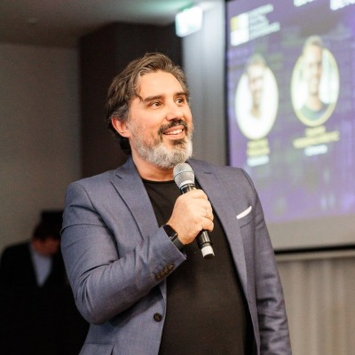

"This saves 3 hours a week"
Written down before you start, with one number.
Workshop for business operators — 40 minutes, phones out
Everyone has the same models. What you build on top, what you keep, and how fast you change your mind is the difference.
Before you start: add the event name and date to this slide. The meta line has no date on purpose until you confirm it.
Open with the show of hands on the next two slides, not with your bio. The host has read the bio already. Your first line is a question.
Bio correction: you are no longer at Microsoft (ended 31 Aug 2026). If the host reads "today he partners with enterprises at Microsoft", correct it lightly: "formerly — these days I do this independently."
Show of hands
Builds one per click. Count roughly, say the count back to the room. This is where you pick your examples for the next forty minutes.
Mostly owners: talk euros and hours. Mostly team leads: the "keep human" list on the worksheet is something they agree with their boss; say so at Call 2. Mostly solo: the teammate they build in Exercise 2 is literally their first hire.
Keep them up
That drop between the first hand and the last is what we close in the next forty minutes.
Three questions, hands stay up, so the room watches the hands go down. Wait a full two seconds after each.
"Hands up if you used an AI tool this week." (Nearly all.) "Keep it up if something AI does in your business every week without you touching it." (A third.) "Keep it up if you can tell me the euros it earned or saved you last month." (Two or three.) "That drop is what we close in the next forty minutes."
If more hands than expected survive the last question, name them — they are your Luca if Luca isn't in the room.
Same models, same chat apps, same copilots in the same office suite. Same price list.
Which dishes you cook, who tastes before it leaves the pass, and how quickly you change the menu.
The anchor analogy. Come back to "the kitchen" in every section.
"Two restaurants, same street, same supplier. Same tomatoes, same flour. One has a queue out the door. The ingredients don't explain that. The kitchen does."
Click once to reveal the right card.
McKinsey, The State of AI in 2025: Agents, innovation, and transformation (November 2025).
Builds one bar per click. Say each number once, then let the drop speak.
"Almost nine in ten use it. Fewer than four in ten can see it in profit. About six in a hundred get serious value. Today is about what those six do differently."
If challenged: the 39% is "any level of EBIT impact", self-reported. The ~6% is McKinsey's own high-performer definition. Both are on the sources slide.
Access isn't the advantage. Decisions are.
Three decisions, specifically. We'll name them, see them in a real business, and then you'll make them for your own.
Pause after the first sentence. Two full seconds.
The next two slides do the setup: what they leave with, then how the time runs. Don't pre-empt them here.
Builds one per click. Point at the worksheet on the table: every one of these is a box on it.
"Not a tour of tools. Not a list of prompts. Three things you can photograph on your way out."
Phones out — you'll build on whatever assistant is on it. Pens ready — the worksheet is on your table. Pair up with someone you don't work with.
Thirty seconds. The point of this slide is the yellow block: half the session is them working, not you talking.
"I talk for seventeen minutes. You work for twenty. Find your partner now."
What to build on top. What to keep. How fast to change your mind.
Minutes 5–11
Keep moving. This section is six minutes; the exercises need the time more than the theory does.
Put AI inside a workflow you already run every week.
AI drafts. A human decides where money, trust or your name is at stake.
Every automation gets an owner, a metric, and a review date.
Builds one call per click. One sentence each — the next three slides unpack them.
"Automate to the extreme. Decide like an owner. Review like a scientist."
Copy, paste, copy back. Depends on who's curious. Nobody can say what it saved.
Same step, same input, same format, every time. You can count it, so you can improve it.
The high-performer finding lives here. McKinsey's high performers report redesigning workflows, not just adding tools.
"A dishwasher in the garage is technically a dishwasher. It saves time only once it's plumbed into the kitchen."
Growth, not only efficiency: companies seeing the most value often set growth or innovation as goals too. Ask: "What could you now offer that you couldn't staff before?"
Decide in advance where the human stays. Write it down, so nobody has to guess under pressure.
Builds four items. Ask the room which one they'd add — you'll often hear "hiring" or "legal".
Key nuance: "keep human" doesn't mean "no AI". AI can prepare the refund decision; a person approves it. That's the Assist verdict in Exercise 1.
Written down before you start, with one number.
Small enough to fail cheaply. Real enough to learn from.
Your research-chemist line goes here.
"I started as a chemist. You never fall in love with the hypothesis. You run the experiment, read the result, and change your mind without drama."
The failure mode to name: automations that nobody owns keep running for a year after they stopped being useful.
A real business from our community: automated to the extreme, still in control.
Minutes 11–17
If Luca is in the room, bring him up here and interview him for 90 seconds using the five beats on the next slide. A live answer beats any slide.
Every dashed box is a placeholder. Replace them all and delete the red "Fill in" badge.
Interview questions if Luca is live: "What ate your week?" · "What did you hand to AI first?" · "What would you never hand over?" · "What did you switch off?" · "What changed in the numbers?"
Email, form, or chat — collected in one place.
Type, urgency, customer history attached.
In house tone, with a confidence flag.
Ten seconds when it's right. Full attention when it's flagged.
Tracked, so the review date has data.
Four steps run themselves. The one that carries his name doesn't.
This is a generic reference pattern, clearly labelled. Swap the step names for Luca's real ones, keep the colour coding.
Point at the coral step: "This is Call 2 made concrete. That box is why he sleeps at night."
Three exercises, twenty minutes. You leave with a working helper and a date to review it.
Minutes 17–37
Worksheets are already on the tables (handout.html, printed double-sided) and pairs were formed at slide 8. Check nobody is sitting alone, then press X on the next slide.
Find one real candidate in your own week.
0:00–3:00 solo
3:00–7:00 pairs
7:00–8:00 two shares
Press X to start the countdown. Walk the room. You'll see two failure modes:
1) Process too big ("marketing"). Push to one repeating task. 2) Everything marked "needs judgment". Ask: "Would a sharp intern with a checklist get this 80% right?"
At 7:00, ask two people to read out their top Automate step. Write them on a flipchart — you'll reuse them in Exercise 2.
| Step (example: after a sales call) | Repetitive | Needs judgment | Cost of a mistake | Verdict |
|---|---|---|---|---|
| Write up the call notes | 3 | 1 | 1 | Automate |
| Draft the follow-up email | 3 | 2 | 2 | Assist |
| Update the CRM record | 3 | 1 | 1 | Automate |
| Decide the discount to offer | 2 | 3 | 3 | Keep human |
Rule of thumb: high repetition and low judgment → automate. High repetition, real judgment → AI drafts, you decide. High cost of a mistake or a relationship on the line → keep human.
Show this slide before starting the timer if the room looks unsure, or after as the debrief. It's the same content as the worksheet's rule box.
ROLE You are the [job title] for [company], a [one-line description]. TASK Each time I give you [a customer email], produce [a reply draft]. RULES - Tone: [warm, direct, no jargon] - Always: [give a delivery time] - Never: [promise refunds or quote prices] - If unsure, reply "NEEDS HUMAN" and say why. FORMAT [Subject line, then at most 120 words] EXAMPLE OF A GOOD ANSWER [paste one you'd happily send]
The template is on page 2 of the handout, so nobody has to copy it from the screen.
"You wouldn't hand a new hire a sticky note that says 'do emails'. Don't do it to the AI either."
Take your top Automate or Assist step. Use whatever assistant is on your phone.
Remove names, emails, amounts and anything confidential before you paste. Invent the details if you need to.
0:00–3:00 write the brief
3:00–5:00 first run
5:00–7:00 partner attacks
7:00–8:00 show of hands
Say the data warning out loud before you press X. Consumer chat apps may keep what's pasted into them.
Have your own backup run ready on your laptop (an invented customer complaint, before and after). If the Wi-Fi fails, run it on screen and let pairs critique it instead.
At 7:00: "Hands up if you'd send the output with light edits." Then: "Hands up if yours said NEEDS HUMAN at least once." Celebrate the second group — that's the control working.
"NEEDS HUMAN" is your control point, in one line of text.
It lets you automate far more than feels comfortable, because the risky cases come back to you instead of going out the door.
This is the thesis of the workshop. Say it slowly.
Link back to Luca's coral box on slide 16.
Decide now how you'll decide later.
Solo. Put the review date in your calendar before the timer ends.
Four minutes, solo. The calendar entry is the real output — ask people to show you their phone as you walk past.
If you're behind schedule, cut this to two minutes: owner and review date only.
Minute 37. One line per takeaway. Don't re-teach.

Alessandro Vozza Lovelace EngineeringAsk everyone to fill in the commitment sentence (bottom of the handout) and photograph it.
"Next time you look at a competitor, don't ask which AI they use. Ask what they refused to hand over — and how fast they change their mind."
Leave this slide up for Q&A. Replace the links with a QR code before the event.
Backup slide — press End if someone asks where a number came from. Every figure spoken in the session is here. If you add one, add its source in the same commit.